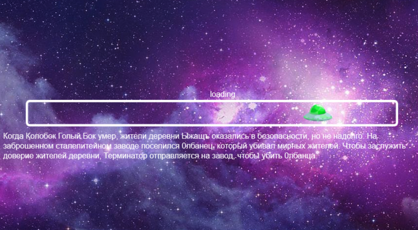
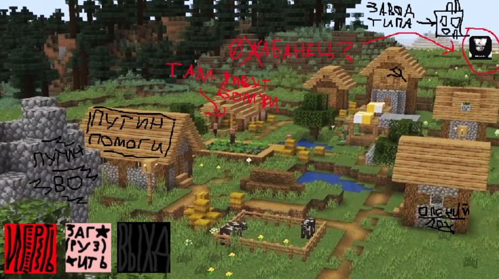
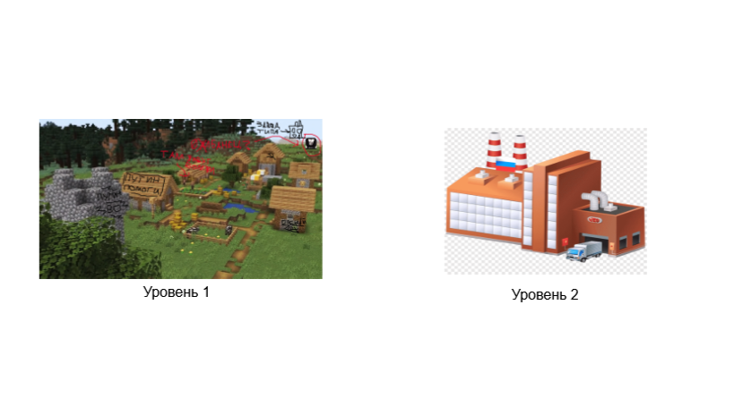
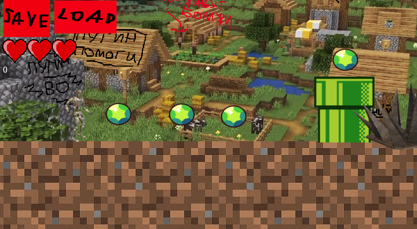
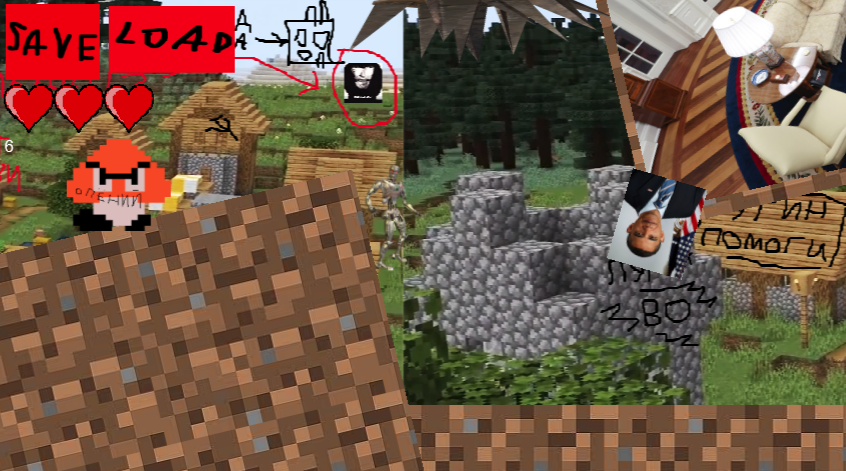
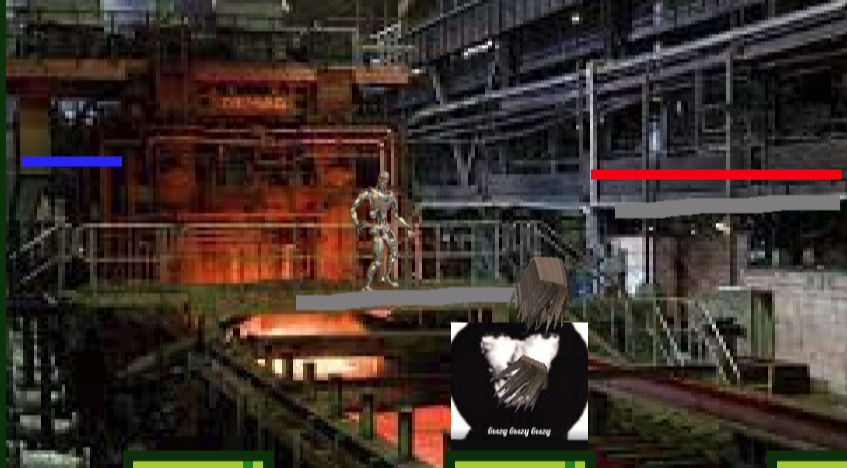

Путешествие ТерминатораTerminator's journey
Скачать
Download
17.2 MB
Мой финальный проект по Construct. В нём вы играете за Терминатора и вы идёте на сталелитейный завод чтобы победить Олбанца-маньяка, который там поселился, чтобы заслужить доверие жителей деревни. На первом уровне вы идёте по какой-то пустоши с шипами, собираете гемы из браво стаса. Там есть 2 врага: Опёний, который просто ходит туда сюда и Обама, который кидает в вас флаг Америки когда вы стреляете. Вы можете кидаться во врагов дорогоукладчиками. На втором уровне вам нужно победить босса Олбанца который может кидать в вас очень много медленных шипов. Управление кривое.
My final project on Construct. In it, you play as Terminator and you go to a steel mill to defeat the Olbanian maniac who settled there to earn the trust of the villagers. In the first level, you go through some wasteland with spikes, collecting gems from the Bravo Stas. There are 2 enemies: Openiy, who just walks back and forth, and Obama, who throws an American flag at you when you shoot. You can throw road rollers at the enemies. In the second level, you need to defeat the boss Olbanian, who can throw a lot of slow spikes at you. The controls are crooked.





